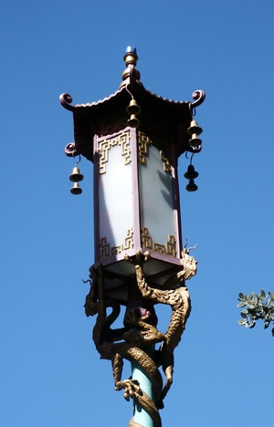

Chinatown
 San Francisco's Chinatown is the oldest Chinatown in North America and one of the largest Chinese neighborhoods outside Asia. Since its establishment in the 1840s, it has been highly important and influential in the history and culture of ethnic Chinese immigrants to the United States and North America. Chinatown is an active enclave that continues to retain its own customs, languages, places of worship, social clubs, and identity.
Popularly known as a "city-within-a-city", it has developed its own government, traditions, over 300 restaurants, and as many shops. There are two hospitals, numerous parks and squares, a post office, and other infrastructure. Visitors can easily become immersed in a microcosmic Asian world, filled with herbal shops, temples, pagoda roofs and dragon parades.
In addition to it being a starting point and home for thousands of Chinese immigrants, it is also a major tourist attraction — drawing more visitors annually to the neighborhood than the Golden Gate Bridge.